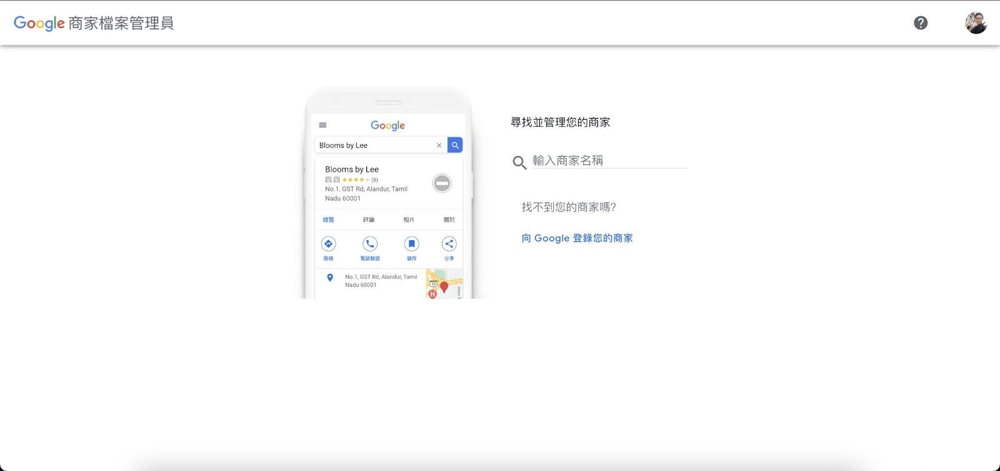
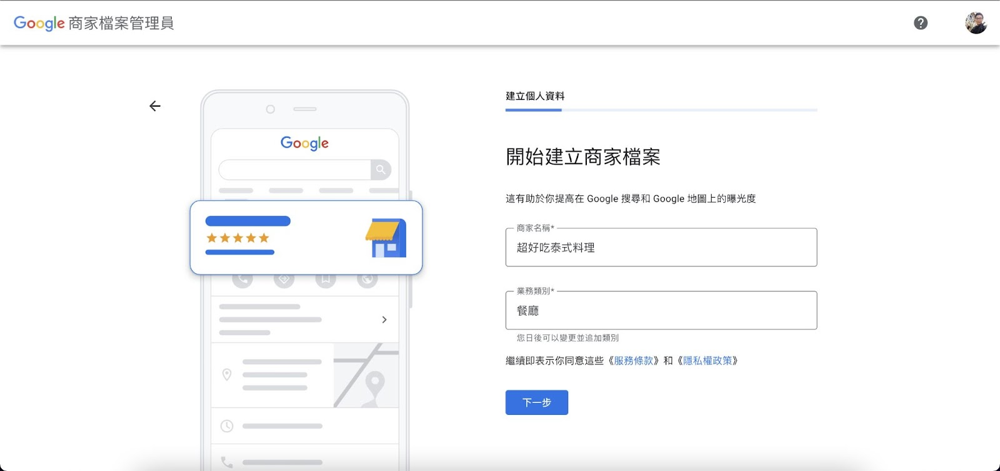
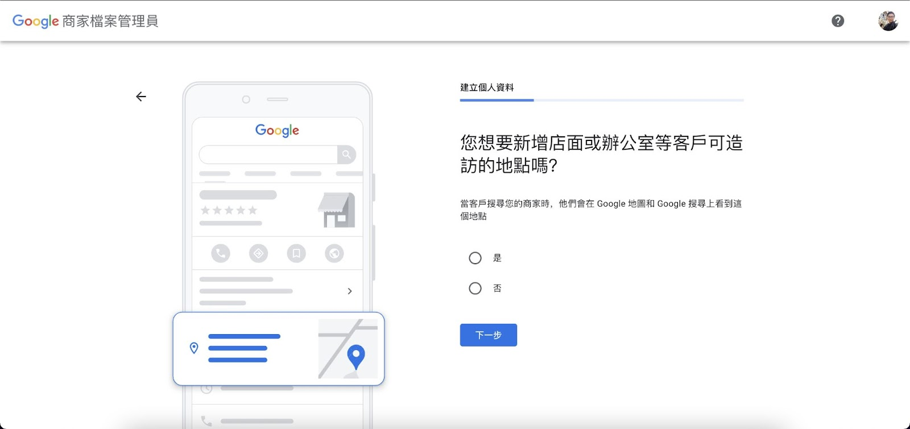
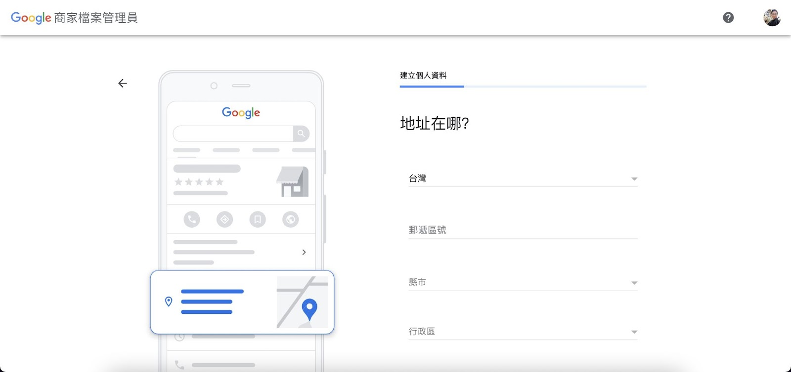
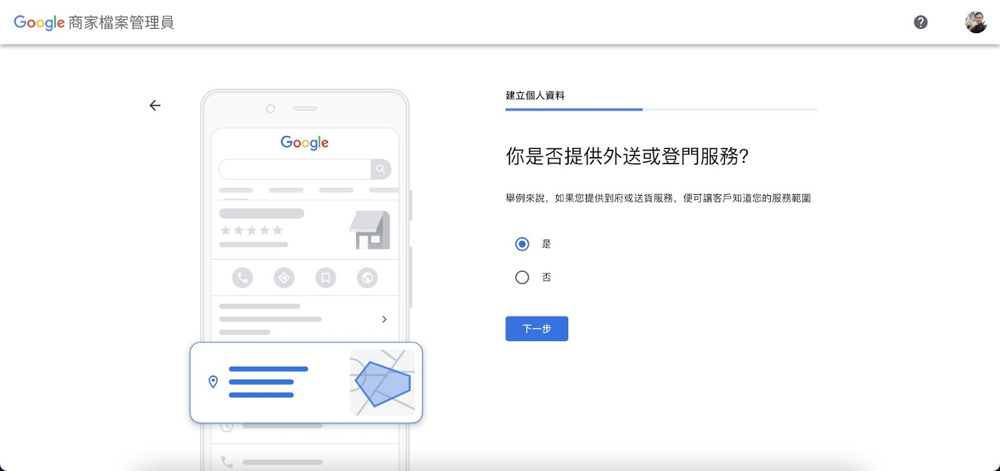
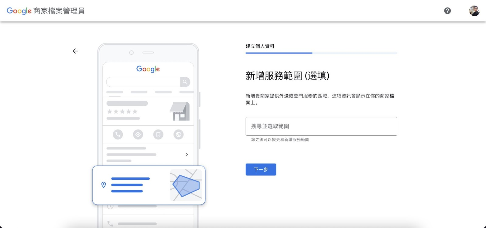
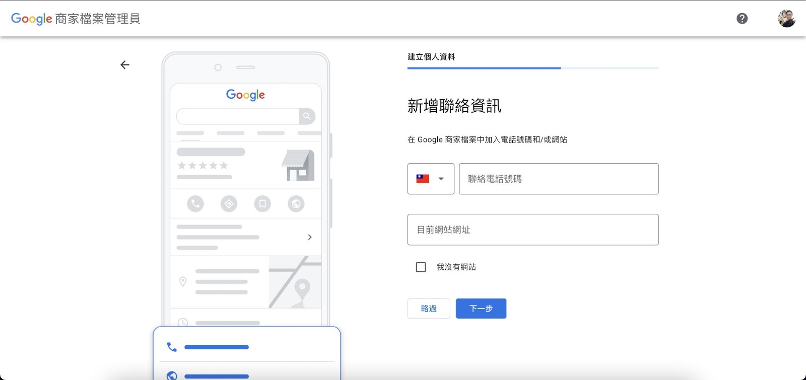
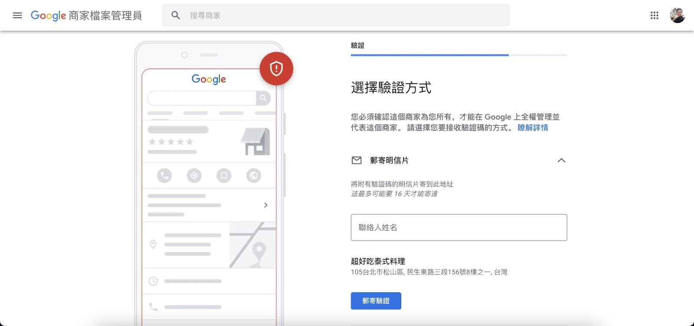
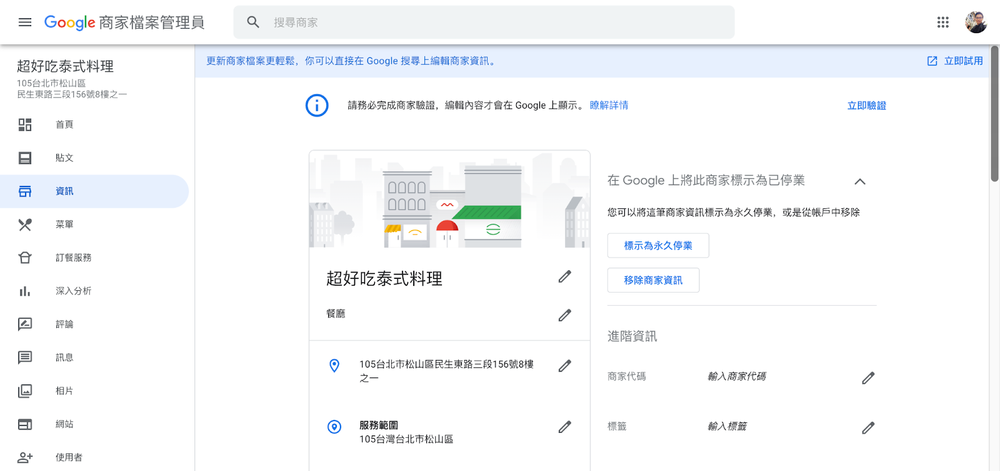

一、先確認你能不能申請 Google 商家
Google 官方規則的核心很簡單：
你必須是「會和客戶面對面接觸」的商家，才適合申請 Google 商家檔案。
可以申請的典型情況
- 有實體店面、教室、工作室、辦公室，顧客會到現場
- 或者你是到府 / 到場服務型商家，例如維修、清潔、安裝、空調服務
- 或者你同時有固定地點，也會到客戶現場服務
不適合申請的典型情況
- 純線上商家
- 顧客不會到現場，你也不會去客戶現場
- 只有課程名稱，沒有對應的真實營運主體、接待方式或服務模式
對你這個案子最重要的判斷
如果你們是「空調技術培訓課程」，請先想清楚以下哪一種才是 Google 上真正要建立的主體：
- 有固定教室 / 培訓場地的課程單位
- 有實體據點的公司，課程只是公司提供的其中一項服務
- 到府服務為主，但同時提供培訓
這個判斷會直接影響：
- 店名怎麼命名
- 地址是否公開
- 是否應該設定服務區域
- Google 驗證時要拍什麼
二、註冊前先準備好這些資料
不要一邊申請一邊找資料，會很容易卡住。
必備資料
- Google 帳號
- 正式店名 / 商家名稱
- 主要類別
- 地址或服務區域
- 對外電話
- 官方網站 / 課程頁 / 表單
- 營業時間或可聯絡時間
- 可驗證商家真實存在的資料
驗證前建議先準備
- 店門口 / 門牌 / 招牌照片
- 教室、辦公室或接待空間照片
- 工具、設備、教材或工作場景照片
- 名片、招牌、品牌文件等證明素材
官方入口
- Google 商家新增入口：https://business.google.com/add
- Google 商家說明中心：https://support.google.com/business/answer/7039811?hl=zh-Hant
三、完整申請步驟
Step 1：前往 Google 商家建立入口
請打開：
如果你尚未登入 Google 帳號，Google 會先要求你登入。
你這一步要做什麼
- 用「未來要長期管理商家的人」的 Google 帳號登入
- 若你是代辦，最好先確認之後是由誰當主要擁有者
小提醒
- 儘量不要用臨時帳號
- 最好使用公司信箱綁定的 Google 帳號
- 如果這個店家之後要交由店主管理，Primary owner 最好保留給店主本人
Step 2：先搜尋商家名稱，確認是否已經存在
Google 會先請你搜尋商家名稱，因為有些店家可能已經被建立過了。
這一步的目的
- 避免重複建立同一個商家
- 若 Google 已經有這個店家的資料，應優先聲明擁有權，而不是重建一個新的
畫面示意

你該怎麼判斷
若搜尋後找得到你的商家
- 不要急著新增第二個
- 先看那個商家是不是你的實際店家 / 公司 / 據點
- 若是，就走「聲明擁有權」流程
若搜尋後找不到
- 再進入新增商家的流程
最常見錯誤
- 店家明明已存在，卻又新增一個重複據點
- 用課程名稱新建一個點，但實際現場招牌是公司名
Step 3：建立商家名稱與主要類別
若系統確認你要新增新商家，接著會要你填：
- 商家名稱
- 業務類別 / 主要類別
畫面示意

名稱怎麼填
請填「真實世界正在使用的商家名稱」。
正確做法：
- 和招牌一致
- 和名片一致
- 和公司對外品牌一致
錯誤做法：
- 空調技術人員培訓課程養成班｜台中最專業｜立即報名
- 店名裡加入電話、地區詞、招生關鍵字
類別怎麼填
Google 官方要求：類別要選最符合「核心業務」的那一項。
對你這案子，可能會在以下方向中選一個：
- 培訓中心
- 教育中心
- 成人教育學校
- 職業訓練學校
- 空調承包商
- 冷氣維修服務
類別判斷原則
- 如果商家主體是「課程 / 培訓單位」，類別偏教育 / 培訓
- 如果商家主體是「空調公司」，課程只是附帶服務，主類別就可能是空調相關
Step 4：回答「顧客能不能到你的地點」
Google 會問你這是不是一個顧客可以實際到訪的地點。
畫面示意

如果你有實體地點可接待
請選：
- 是
適合情況：
- 有教室
- 有辦公室
- 有工作室
- 有門牌、招牌或固定接待地點
如果你沒有固定接待點，但會到客戶現場服務
可能會走服務區域商家（Service Area Business）的路線。
很重要
如果你沒有真正對外接待客人的固定點，卻硬把某個地址當店面填上，後續驗證很容易失敗。
Step 5：填寫地址
如果你剛剛選擇顧客可以到訪你的地點，接著就要填地址。
畫面示意

地址填寫原則
- 一定要填真實地址
- 必須能被顧客實際找到
- 最好能對應到招牌、門牌、收件地址
這一步為什麼很重要
因為 Google 後續可能會要求你：
- 明信片驗證
- 錄影驗證
- 視訊驗證
到時候都會用這個地址當基準。
Step 6：是否提供到府 / 外送 / 登門服務
如果你的商家有外送、到府、登門服務，Google 可能會問你是否提供此類服務。
畫面示意

什麼情況要選「是」
- 空調安裝
- 冷氣維修
- 到場檢修
- 到府服務
對你這案子的建議
如果這個主體同時有空調工程 / 維修服務，這一步要如實填寫。
如果這只是純課程單位，而不是實際對外提供到場服務，則不要亂填。
Step 7：填寫服務區域
如果你有到府 / 到場服務，Google 可能會讓你設定服務區域。
畫面示意

怎麼填比較合理
- 填你真的有在服務的行政區 / 城市
- 不要亂填全台灣，只為了想多曝光
- 服務區域應該反映真實營運範圍
Step 8：填寫聯絡方式
Google 會請你補上聯絡資訊，通常包含：
- 電話
- 網站
畫面示意

電話怎麼填
- 填真正有人接的商家電話
- 不要填私人號碼但永遠沒人接
- 若會進行驗證，電話必須可接聽或收簡訊
網站怎麼填
有網站就填：
- 官網
- 課程頁
- 報名頁
如果沒有網站，也可以先略過，之後再補。
Step 9：選擇並完成驗證
這是最重要的一步。
畫面示意

現在 Google 常見驗證方式
Google 官方目前列出的常見方式包括：
- 錄影驗證（video recording）
- 電話或簡訊驗證（phone / text）
- Email 驗證
- 即時視訊驗證（live video call）
- 郵寄明信片（mail / postcard）
最重要的事
Google 官方明確寫到：
- 驗證方式是 Google 自動決定的
- 不是每個商家都能自由選擇所有方式
- 有些商家甚至可能要驗證超過一次
如果是錄影驗證，通常要拍什麼
Google 官方要求你用一段「連續、不剪接、至少 30 秒」的影片證明：
- 你的位置是真的
- 街景
- 路牌
- 附近商家
- 建物外觀
- 你的商家真的存在
- 招牌
- 門牌
- 商家名稱
- 教室 / 場地 / 設備
- 你真的有管理權
- 開門
- 操作收銀 / 系統
- 進入員工區
- 使用工具、設備、教材
如果是明信片驗證
- 一般約 14 天左右收到
- 收到後要在效期內輸入驗證碼
- 等待期間不要亂改商家名稱、地址或類別，否則驗證碼可能失效
Step 10：完成後，你會看到商家管理畫面
較舊的教學文章常會看到「後台管理畫面」；現在 Google 更常把管理入口整合在：
- Google 搜尋
- Google 地圖
畫面示意（較舊後台示意）

現在較常見的管理方式
驗證完成後，Google 官方指出你可以直接在：
- Google 搜尋
- Google 地圖
編輯商家資訊。
常見操作包括：
- 編輯商家檔案
- 修改地址
- 修改營業時間
- 上傳照片
- 回覆評論
- 補充電話與網站
四、註冊完成後，第一時間要補齊哪些內容
不要只完成驗證就停住。
優先補齊順序
1. 商家基本欄位
- 名稱
- 類別
- 地址 / 服務區域
- 電話
- 網站
- 時間
2. 商家描述
Google 商家描述建議寫：
- 你是誰
- 提供什麼服務
- 適合誰
- 有哪些特色或專長
不要寫：
- 促銷價
- 招生折扣
- 一堆電話與網址
- 不實保證
3. 照片
至少先補：
- 外觀 3 張
- 內部 3 張
- 工作情境 3 張
- 團隊 / 講師 3 張
4. 課程 / 服務項目
像你這個案例可以補：
- 空調技術人員培訓課程
- 空調安裝實作教學
- 空調保養教學
- 空調維修教學
- 實體課與線上課資訊
五、最常見卡關問題
問題 1：找得到商家，但不是我建立的
這表示 Google 可能已經有這個地點資料。
做法：
- 不要重建第二個商家
- 走「要求擁有權」或「聲明商家擁有權」流程
問題 2：驗證方式跟別人的教學不一樣
這很正常。
Google 官方已寫明：
- 驗證方式由系統自動決定
- 依商家類型、地區、公開資訊、營業時間等條件不同而不同
問題 3：我沒有網站，可以先申請嗎？
可以。
網站不是一定要一開始就有，但電話、地址、類別與驗證能力會更重要。
問題 4：我只是課程，不是店面，可以申請嗎？
要看你是否符合「面對面接觸」與「真實營運主體」兩個條件。
如果只有課名、沒有真實對外營運的主體、空間或服務方式，會比較危險。
六、給店主的最短實作版
如果你只想照著做，請記住這個最短版本：
- 打開
https://business.google.com/add - 用未來要長期管理的 Google 帳號登入
- 搜尋店名，確認是否已存在
- 若不存在，就新增店名與主要類別
- 如實回答是否有顧客可到訪地點
- 填地址或服務區域
- 填電話與網站
- 依 Google 提供的方式完成驗證
- 驗證後到 Google 搜尋 / 地圖補完內容
- 立刻上傳真實照片與完整商家資訊
七、來源與截圖說明
官方規則來源
- Google 商家檔案說明：開始使用 Google 商家檔案 — https://support.google.com/business/answer/7039811?hl=zh-Hant
- Google 商家檔案說明：編輯商家檔案 — https://support.google.com/business/answer/3039617?hl=zh-Hant
- Google 商家檔案說明：管理相片與影片 — https://support.google.com/business/answer/6103862?co=GENIE.Platform%3DDesktop&hl=zh-Hant
- Google 商家檔案說明：驗證商家 — https://support.google.com/business/answer/7107242?hl=en
- Google 商家檔案說明：錄影驗證 — https://support.google.com/business/answer/14271705?hl=en
圖文示意截圖來源
截圖使用說明
- 本文中的步驟圖片主要用於幫助理解畫面流程
- Google 實際介面可能因時間、帳號狀態、地區、商家類型而略有差異
- 若圖與你看到的按鈕文字稍微不同，請優先以 Google 當下畫面與官方規則為準